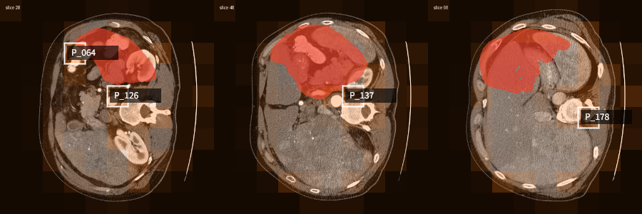

docs/VLM_WEB_DEMO_PLAN.md 的 Roadmap。

| 标志物 | 日期 | 结果 | 单位 | 参考上限 | 判定 |
|---|---|---|---|---|---|
| AFP | 2026-01-15 | 6.0 | ng/mL | 7.0 | 正常 |
| AFP | 2026-04-15 | 18.0 | ng/mL | 7.0 | 升高 |
| AFP | 2026-07-15 | 85.3 | ng/mL | 7.0 | 升高 ×12.2 |
| DCP | 2026-01-15 | 25.0 | mAU/mL | 40.0 | 正常 |
| DCP | 2026-07-15 | 68.0 | mAU/mL | 40.0 | 升高 · +172% |
SCHEMA_INVALID imaging_summary 写了 3 条（上限 2 条）STAGING_ASSERTION "No LI-RADS …" 被误判为分期断言 → 发现守卫代码 bug 并修复（句首裸 "No/not" 否定识别）
{
"case_id": "DEMO_HCC_001",
"report_type": "longitudinal_synthetic_demo",
"imaging_summary": [
"Baseline imaging: synthetic CT volume from 2026-01-15 with 1 mass region, volume 0.692 mL, max 3D bounding extent 17.5 mm",
"Followup imaging: synthetic CT volume from 2026-07-15 with 2 mass regions, volume 1.632 mL, max 3D bounding extent 22.5 mm"
],
"laboratory_summary": [
"AFP: rising from 6.0 to 85.3 ng/mL, above reference high of 7.0 ng/mL",
"DCP: rising from 25.0 to 68.0 mAU/mL, above reference high of 40.0 mAU/mL"
],
"multimodal_assessment": {
"state": "concordant_progression_signal",
"concordance": "high",
"summary": "Concordant progression signal detected with rising AFP and DCP levels, imaging showing new lesion and increased tumor volume"
},
"review_required": true,
"intended_use": "research prototype only; not for diagnosis, staging, prognosis, or treatment decisions"
}